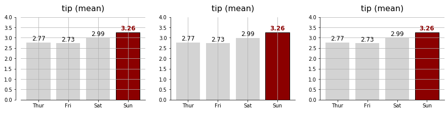

- 착시를 줄여주는 축과 격자를 설정하는 방법입니다.
- matplotlib에서는
Axes.spines와Axes.grid객체를 통해 제어합니다.
Claus Wilke, “데이터 시각화 교과서”, 영문판(Free)
Colin Ware “데이터 시각화, 인지과학을 만나다”
White Paper-Principles of Data Visualization-What we see in a Visual
1. 착시
- 우리 눈은 사물을 있는 그대로 보지 않습니다.
- 주변과 견주어보기도 하고, 우리가 알고 있는 지식에 비추어 보기도 합니다.
- 이런 과정에서 있는 그대로 보지 못하는 착시가 발생합니다.
- 착시는 생물학적 이유로 발생하기도 하는데, 예로 Mach Bands가 있습니다.
- 선이 점점 두꺼워지다 다른 선과 닿는 순간 경계 지점에 그림자가 보입니다.
- 측면 억제
lateral inhibition라는 현상이 있습니다. 경계를 명확히 인지하기 위해 이렇게 진화한 것으로 생각되는데, 자극을 강하게 받은 신경 세포는 이웃한 신경세포에 억제성 신경전달 물질을 전달해서 활성화를 억제합니다. - 그렇기 때문에 같은 색이라고 해도 다른 색과 접한 부분은 다르게 인식됩니다.
- 참고로, 이 현상을 밝힌 마하
Ernst Mach는 초음속에 대한 연구를 한 그 마하입니다.

- 한편으로 인지 방식에 의해 일어나기도 합니다.
- 우리는 배경에 비추어 물체를 인식하고 크기를 판단하기 때문입니다.
- 폰조 착시
Ponzo Illusion가 대표입니다. - 철길 그림 위의 두 막대기는 멀리 있는 것이 길어보입니다.
착시는 누구나 겪는 일이지만, 간단히 벗어날 수 있습니다.
- 이미 위 그림에서 선들이 닿기 전 배경선이 보일 때,
- 그리고 철길 위에 빨간 보조선을 그었을 때
- 우리는 착시에서 벗어나는 경험을 했습니다.
matplotlib에서는
spines와grid의 도움을 받을 수 있습니다.
2. 윤곽선 spines
matplotlib: matplotlib.spines
matplotlib: Source code for matplotlib.spines
matplotlib: Spines
matplotlib: Dropped spines
matplotlib: Spine Placement Demo
matplotlib: Centered spines with arrows
matplotlib에서 부르는 이름은 조금 낯설지만 생각해보면 은근 직관적입니다.
- 제가 축공간이라고 부르는, 그림이 그려지는 공간은
axes이고 - 눈금이 붙는 부분의 이름은
spines입니다.
- 제가 축공간이라고 부르는, 그림이 그려지는 공간은
데이터 시각화 교과서에는 spine에 대한 언급이 별로 없습니다.
- 보여주고자 하는 데이터의 종류에 따라 다르고
- 특히 그림의 종류에 따라 적절히 변형되어 사용되고 있습니다.
- 원하는 형식으로 연출할 수 있도록 이번 글은 기능 위주로 작성하겠습니다.
matplotlib의 object oriented interface에서, spine은
ax.spines로 제어됩니다.지난 글에 있는 코드를 그대로 활용하고,
ax.spines활용에 집중하기 위해 시각화 코드를 함수로 만들어 버립니다.1
2
3
4
5
6
7
8
9
10
11
12
13
14
15
16
17
18
19
20
21
22
23def plot_example(ax, zorder=0):
ax.bar(tips_day["day"], tips_day["tip"], color="lightgray", zorder=zorder)
ax.set_title("tip (mean)", fontsize=16, pad=12)
# Values
h_pad = 0.1
for i in range(4):
fontweight = "normal"
color = "k"
if i == 3:
fontweight = "bold"
color = "darkred"
ax.text(i, tips_day["tip"].loc[i] + h_pad, f"{tips_day['tip'].loc[i]:0.2f}",
horizontalalignment='center', fontsize=12, fontweight=fontweight, color=color)
# Sunday
ax.patches[3].set_facecolor("darkred")
ax.patches[3].set_edgecolor("black")
# set_range
ax.set_ylim(0, 4)
return axobject oriented 방식은 이런 식의 호출이 가능합니다.
1
2fig, ax = plt.subplots()
ax = plot_example(ax)
spines의 정체를 확인해봅시다.1
type(ax.spines)
OrderedDict객체입니다.dictionary의 일종이네요.- 그럼 key와 value는 어떤 것들일까요?
1
2for k, v in ax.spines.items():
print(f"spines[{k}] = {v}")
- key는
"left", "right", "bottom", "top"이네요. 네 개의 테두리입니다. - value가 뭔지 잘 모르겠습니다. 다시 정체를 파악해봅니다.
1
ax.spines.values()

matplotlib.spines.Spine객체입니다.- 공식문서에 따르면
Spine은Patch의 subclass이고 set_patch_circle,set_patch_arc가 호출되면 원이나 호를 그리기도 한답니다.- 선을 그리는
set_patch_line이 기본값입니다.
- 공식문서에 따르면
2.1. spine 숨기기 : .set_visible(False)
- 위 그림에서 맨 아래만 남기고 왼쪽, 위쪽, 오른쪽 spines를 지워보겠습니다.
set_visible(False)명령을 사용하면 됩니다.1
2
3
4
5
6fig, ax = plt.subplots()
ax = plot_example(ax)
ax.spines["top"].set_visible(False)
ax.spines["left"].set_visible(False)
ax.spines["right"].set_visible(False)
- 사족을 하나 붙이면,
set_visible()은 spine에만 적용되는 명령이 아닙니다.- General Artist Properties라고 해서 모든 객체에 적용 가능한 명령입니다.
- 위 예시에선 spine에 사용했을 뿐입니다.
- 이전 글에서 설명했듯 bar 객체에도 적용 가능합니다.
2.2. spine 범위 지정하기 : .set_bounds(min, max)
- spine을 일부 영역만 보여주고 싶을 수 있습니다.
- 왼쪽 spine을 안보이게 하는 대신 가운데만 그려봅시다.
set_bounds(min, max)를 사용합니다.1
2
3
4
5
6
7fig, ax = plt.subplots()
ax = plot_example(ax)
ax.spines["top"].set_visible(False)
ax.spines["right"].set_visible(False)
ax.spines["left"].set_bounds(1, 3)
2.3. spine 위치 지정하기 : .set_position((direction, distance))
matplotlib.spines
matplotlib.axes.Axes.set_position
matplotlib: Spine placement demo
matplotlib: Centered spines with arrows
- 지난번 글에서 이런 그림을 그렸습니다.
- 가로와 세로축을 원래 위치에서 밖으로 살짝 밀어서 공간을 확보하고 여유를 연출했습니다.
set_position((direction, distance))을 사용해서 할 수 있습니다.- 먼저,
get_position()을 사용해서spines["left"]가 어떻게 설정돼있나 보겠습니다.1
ax.spines["left"].get_position()
- 밖으로(“outward”) 0만큼 나가있다고 합니다.
set_position(("outward", 10))을 설정해서 조금 간격을 띄워보겠습니다.1
2
3
4
5
6fig, ax = plt.subplots()
ax = plot_example(ax)
ax.spines["top"].set_visible(False)
ax.spines["right"].set_visible(False)
ax.spines["left"].set_position(("outward", 10))
- “outward”를 넣을 수 있으니 거꾸로 할 때는 “inward”를 쓰면 될 것 같습니다.
- 그렇지 않습니다. 대신 거리를 음수로 넣으면 됩니다.
- “outward” 대신 “axes”, “data”를 넣을 수 있고, 의미는 다음과 같습니다.
1
2
3
4
5
6
7
8
9
10
11
12
13
14
15fig, ax = plt.subplots(ncols=3, figsize=(15, 3))
for i in range(3): # 그래프 세개 한번에 그리기
ax[i] = plot_example(ax[i])
ax[i].spines["top"].set_visible(False)
ax[i].spines["right"].set_visible(False)
# ax[0] : spine을 data 영역에서 지정된 거리만큼 이동
ax[0].spines["left"].set_position(("outward", -50))
# ax[1] : spine을 axes의 지정된 위치에 설정
ax[1].spines["left"].set_position(("axes", 0.3))
# ax[2] : spine을 data의 지정된 위치에 설정
ax[2].spines["left"].set_position(("data", 2.5))
- “axes”와 “data”도 음수를 함께 사용할 수 있습니다.
- 이 기능을 이용하면 수학시간에 많이 보던 형태의 그래프를 그릴 수 있습니다.
1
2
3
4
5
6
7
8
9
10
11
12
13
14
15
16
17
18
19
20
21
22
23
24
25
26
27
28
29
30
31
32
33
34## data
x = np.linspace(-np.pi, np.pi, 100)
y = 2 * np.sin(x)
fig, ax = plt.subplots(ncols=3, figsize=(12,4))
## normal plot
ax[0].plot(x, y)
ax[0].set_title("normal plot", pad=12)
## textbook (1)
ax[1].plot(x, y)
ax[1].set_title("textbook (1)", pad=12)
# top, right 는 안보이게
ax[1].spines["top"].set_visible(False)
ax[1].spines["right"].set_visible(False)
# left, bottom은 (0, 0)을 지나가게
ax[1].spines["left"].set_position(("data", 0))
ax[1].spines["bottom"].set_position(("data", 0))
## textbook (2)
ax[2].plot(x, y)
ax[2].set_title("textbook (2)", pad=12)
# top, right 는 안보이게
ax[2].spines["top"].set_visible(False)
ax[2].spines["right"].set_visible(False)
# left, bottom은 (0, 0)을 지나가게
ax[2].spines["left"].set_position(("data", 0))
ax[2].spines["bottom"].set_position(("data", 0))
# 화살표 추가
ax[2].plot(1, 0, ">k", transform=ax[2].get_yaxis_transform(), clip_on=False)
ax[2].plot(0, 1, "^k", transform=ax[2].get_xaxis_transform(), clip_on=False)
plt.show()
- 자주 사용할 것들은 이렇게 간단히 사용할 수 있습니다.
set_position(("axes", 0.5"))대신set_position("center")set_position(("data", 0.0"))대신set_position("zero")
3. 격자grid
- spines를 적절히 잡아주면 데이터를 읽기 좋아집니다.
- 그러나 데이터간 크기를 더 잘 비교하려면, 그림에 grid를 깔아주면 더 좋습니다.
.grid(True)메소드로 격자를 그릴 수 있습니다.- axis={“both”, “x”, “y”} 인자로 방향을 지정합니다.
1
2
3
4
5
6
7
8
9
10
11
12
13
14
15
16fig, ax = plt.subplots(ncols=3, figsize=(15, 3))
for i in range(3): # 그래프 세개 한번에 그리기
ax[i] = plot_example(ax[i])
ax[i].spines["top"].set_visible(False)
ax[i].spines["right"].set_visible(False)
ax[0].spines["left"].set_position(("outward", 10))
# ax[0] : x, y 둘 다
ax[0].grid(axis="both")
# ax[1] : x축에서만
ax[1].grid(axis="x")
# ax[2] : y축에서만
ax[2].grid(axis="y")
3.1. major and minor ticks
- grid는 major와 minor tick을 구분하여 그릴 수 있습니다.
- 먼저, major와 minor tick을 설정합니다.
1
2
3
4
5
6
7
8
9
10
11
12
13
14
15
16from matplotlib.ticker import (MultipleLocator, AutoMinorLocator)
fig, ax = plt.subplots()
ax = plot_example(ax)
# top, right, left spines 안보이기
ax.spines["top"].set_visible(False)
ax.spines["right"].set_visible(False)
ax.spines["left"].set_visible(False)
# y축 tick 설정
ax.yaxis.set_major_locator(MultipleLocator(1)) # major tick을 1 단위로 설정
ax.yaxis.set_major_formatter('{x:0.2f}') # major tick format 지정 (오류가 나면 matplotlib upgrade)
ax.yaxis.set_minor_locator(MultipleLocator(0.5)) # minor tick을 0.5 단위로 지정
plt.plot()
3.2. major grid only
- major와 minor ticks가 구분되면, 한쪽을 선택해서 그릴 수 있습니다.
- major와 minor grid를 구분해서 지정할 수 있습니다.
- 따라서, 색상이나 선 스타일 등을 구분해서 변화시키기 좋습니다.
1
2
3
4
5
6
7
8
9
10
11
12
13
14
15
16
17
18
19
20
21fig, ax = plt.subplots(ncols=3, figsize=(15, 3))
for i in range(3): # 그래프 세개 한번에 그리기
ax[i] = plot_example(ax[i], zorder=2) # zorder: bar를 grid 앞으로.
ax[i].spines["top"].set_visible(False)
ax[i].spines["right"].set_visible(False)
ax[i].spines["left"].set_position(("outward", 10))
ax[i].yaxis.set_major_locator(MultipleLocator(1))
ax[i].yaxis.set_major_formatter('{x:0.2f}')
ax[i].yaxis.set_minor_locator(MultipleLocator(0.5))
# ax[0] : major, minor 둘 다
ax[0].grid(axis="y", which="both")
# ax[1] : major만
ax[1].grid(axis="y", which="major")
# ax[2] : major만 + 여러 옵션
ax[2].grid(axis="y", which="major", color="r", ls=":", lw=0.5, alpha=0.5)
plt.show()
- 최종적으로 다음과 같은 결과물을 얻을 수 있습니다.
- 불필요한 spine을 제거해서 시선 분산을 막고,
- grid를 추가해서 데이터들을 옆에 있는 숫자들과 비교하기 좋게 했습니다.
1
2
3
4
5
6
7
8
9
10
11
12
13fig, ax = plt.subplots()
ax = plot_example(ax, zorder=2)
ax.spines["top"].set_visible(False)
ax.spines["right"].set_visible(False)
ax.spines["left"].set_visible(False)
ax.yaxis.set_major_locator(MultipleLocator(1))
ax.yaxis.set_major_formatter('{x:0.2f}')
ax.yaxis.set_minor_locator(MultipleLocator(0.5))
ax.grid(axis="y", which="major", color="lightgray")
ax.grid(axis="y", which="minor", ls=":")